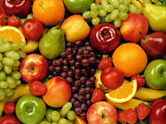
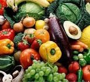

<!--
  Generated template for the FruhoPage page.

  See http://ionicframework.com/docs/components/#navigation for more info on
  Ionic pages and navigation.
-->
<ion-header class="firstT">
  <ion-navbar class="header-menu">
    <ion-title >FRUTAS Y HORTALIZAS</ion-title>
  </ion-navbar>
</ion-header>


<ion-content padding class="fondofro">
    <ion-grid style=" margin-top: 25%;">
        <ion-row>
          <ion-col col-12>
              <button style="background-color: #f4c750" ion-button full class="btn_menu" (click)="irFrutas()">
                  <ion-grid>
                      <ion-row>
                          <ion-col col-12>
                            <div></div>
                          </ion-col>
                        </ion-row>
                        <ion-row>
                          <ion-col col-12 class="spa_letra">
                            <div class="btn_letras">FRUTAS</div>
                          </ion-col>
                        </ion-row>
                  </ion-grid>
                </button>
            </ion-col>
        </ion-row>
        <ion-row>
          <ion-col col-12>
              <button style="background-color: #f4c750" ion-button full class="btn_menu" (click)="irHortalizas()">
                  <ion-grid>
                      <ion-row>
                          <ion-col col-12>
                            <div>></div>
                          </ion-col>
                        </ion-row>
                        <ion-row>
                          <ion-col col-12 class="spa_letra">
                            <div class="btn_letras">HORTALIZAS</div>
                          </ion-col>
                        </ion-row>
                  </ion-grid>
                </button>
          </ion-col>
        </ion-row>
      </ion-grid>
<!--br>
  <br>
  <br>
  <br>
  <br>
  <div text-center>
    <h1> FRUTAS</h1>
    
    <!--<button ion-button outline (click)="irPeces()">Peces</button>-->
    <!--<button ion-button outline [navPush]="pokedex">Pokedex</button>-->
  <!--/div>
  <br>
  <br><br>
  <div text-center>
    <h1>HORTALIZAS</h1>
    
    <!--<button ion-button outline (click)="irAves()">Aves</button>-->
    <!--<button ion-button outline [navPush]="pokedex">Pokedex</button>-->
  <!--/div-->


</ion-content>
